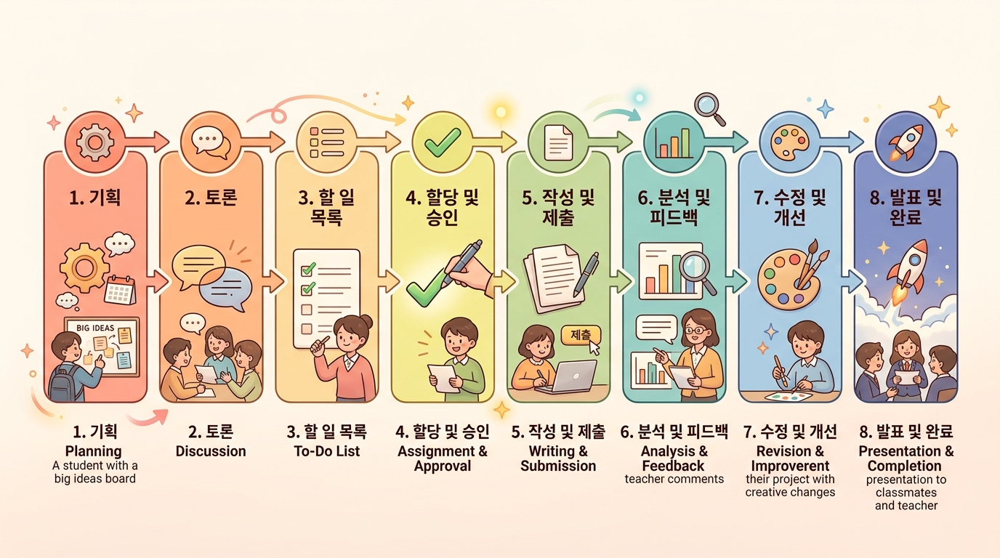

왜 AI로 교재를 만들까? — 교사의 직관과 AI의 생산성¶
이 챕터에서 배울 것¶
- 교재 제작 과정에서 교사들이 겪는 현실적인 어려움을 구체적으로 파악합니다.
- "교사는 창작자, AI는 도구"라는 협업 모델의 의미를 이해합니다.
- 에듀플로의 핵심 철학인 점진적 시각화가 왜 중요한지 비유를 통해 설명할 수 있습니다.
- 에듀플로에 회원가입하고 기본 인터페이스를 직접 둘러봅니다.
도입 — 선생님의 책상 위, 그 익숙한 풍경¶
토요일 오후, 다음 주 수업에 쓸 학습지를 만들려고 노트북을 켭니다. 머릿속에는 "이번에는 학생들이 진짜 이해할 수 있게 만들어야지"라는 의지가 가득합니다. 그런데 빈 화면 앞에 앉으면 막막합니다. 목차를 어떻게 잡을지, 설명을 어디까지 써야 할지, 그림은 어디서 가져올지. 한 시간이 지나도 1페이지를 벗어나지 못합니다.
혹시 이런 경험, 있으신가요?
사실 이것은 선생님의 능력 문제가 아닙니다. 교재를 만드는 일은 수업 설계, 글쓰기, 편집 디자인, 시각화라는 전혀 다른 네 가지 전문 역량을 동시에 요구하기 때문입니다. 수업은 잘하는데 교재 만들기가 어렵다면, 그건 당연한 일입니다.
이 챕터에서는 그 어려움을 정면으로 마주하고, AI라는 새로운 도구가 어떻게 도움이 되는지 살펴봅니다. 걱정하지 마세요. AI를 전혀 몰라도 괜찮습니다. 이 교재 자체가 에듀플로로 만들어졌으니까요.
본문¶
1. 교재 제작, 왜 이렇게 어려울까?¶
교재를 직접 만들어 본 선생님이라면 아마 이런 벽에 부딪혀 보셨을 것입니다.
| 벽의 이름 | 구체적인 상황 |
|---|---|
| ⏰ 시간의 벽 | 챕터 하나 쓰는 데 반나절, 전체 교재는 엄두가 안 남 |
| 🎨 시각화의 벽 | 다이어그램이나 삽화를 넣고 싶지만 도구를 다루기 어려움 |
| 📐 구조화의 벽 | 머릿속 지식은 많은데, 학생 눈높이의 목차로 정리가 안 됨 |
| 🔄 수정의 벽 | 한 곳을 고치면 다른 곳도 연쇄 수정, 끝이 없음 |
이 네 가지 벽의 공통점이 있습니다. 선생님의 교육적 판단과는 무관한, 순전히 "제작 기술"의 문제라는 것입니다.
수업 시간에 칠판 앞에서 설명할 때는 막힘이 없습니다. "여기서 이 개념이 중요해", "이 부분은 학생들이 항상 헷갈려 하지", "이 예시를 들면 바로 이해해" — 이런 판단은 선생님만이 할 수 있습니다. 오랜 교실 경험에서 나온, 말로 설명하기 어려운 직관입니다.
문제는 그 직관을 문서 형태로 옮기는 과정에서 생깁니다. 글을 쓰고, 배치하고, 그림을 그리고, 서식을 맞추는 일은 교사의 전문 영역이 아닙니다. 바로 이 지점에서 AI가 역할을 합니다.
2. 교사의 직관 + AI의 생산성 = 더 나은 교재¶
AI로 교재를 만든다고 하면, 흔히 두 가지 오해가 생깁니다.
오해 1. "AI한테 '교재 만들어 줘' 하면 뚝딱 나오는 거 아니야?" 오해 2. "결국 AI가 다 해 주면, 교사의 역할은 뭐가 남지?"
두 가지 모두 핵심을 놓치고 있습니다.
AI는 글을 빠르게 생성할 수 있지만, 무엇이 교육적으로 의미 있는지는 모릅니다. "이 개념 다음에 저 개념을 배워야 한다"는 순서, "이 예시가 학생에게 더 와닿는다"는 감각, "여기서 쉬어가야 학생들이 지치지 않는다"는 리듬 — 이 모든 것은 교사만이 판단할 수 있습니다.
반대로, 교사는 교육적 판단에는 탁월하지만 그 판단을 빠르게 문서화하는 것은 어렵습니다. 이것이 바로 "교사의 직관 + AI의 생산성"이 만나야 하는 이유입니다.
이 협업 모델에서 가장 중요한 원칙이 있습니다.
교사는 창작자이고, AI는 도구입니다. 모든 결정은 교사가 내립니다.
이것은 에듀플로 헌법 제1조 "교사 주권"에 해당하는 내용입니다. AI가 초안을 만들어도, 그것을 수업에 쓸지 말지, 어떻게 고칠지는 전적으로 선생님의 몫입니다. 마치 요리사가 믹서기를 사용하듯, 도구를 쓰되 요리의 맛은 요리사가 결정하는 것과 같습니다.
3. 에듀플로는 무엇인가¶
에듀플로(EduFlow)는 교사의 수업 아이디어를 체계적인 교육자료로 바꿔 주는 AI 기반 플랫폼입니다.
이름을 풀어 보면, "에듀(Education)" + "플로(Flow)"입니다. 교육 콘텐츠가 물 흐르듯 만들어진다는 뜻이지요. 처음에는 흐릿했던 아이디어가 한 단계를 거칠 때마다 조금씩 선명해지고, 마지막에는 학생에게 바로 전달할 수 있는 완성된 교재가 됩니다.
에듀플로의 사명은 간단합니다.
선생님 머릿속의 생각을 완벽하게 정리하고, 그것을 학생이 이해하기 쉬운 시각적 형태로 구현하는 것.
이 과정에서 AI는 대화를 통해 선생님의 생각을 끌어내고, 선생님은 AI가 만든 결과물을 검토하고 수정합니다. 최종 결과물은 단순히 "AI가 만든 문서"가 아니라, 교사의 교육적 판단이 담긴 교재가 됩니다.
4. 핵심 철학 — 점진적 시각화¶
에듀플로에서 가장 중요한 개념 하나를 꼽으라면 점진적 시각화입니다.
이것을 이해하기 위해, 사진 인화 과정을 떠올려 보세요. 필름 카메라 시절, 암실에서 인화지를 현상액에 담그면 처음에는 아무것도 보이지 않습니다. 시간이 지나면 윤곽이 나타나고, 조금 더 지나면 형체가 드러나고, 마침내 선명한 사진이 완성됩니다.
에듀플로의 교재 제작도 이와 같습니다. 처음부터 완성된 교재를 만들지 않습니다. 안개 속에서 시작해서, 단계마다 조금씩 선명해지는 과정을 거칩니다.
왜 이렇게 단계를 나눌까요?
이유는 단순합니다. 처음부터 완성품을 만들면, 방향이 틀렸을 때 전부 버려야 합니다.
건축에 비유하면, 설계도 없이 바로 벽돌을 쌓는 것과 같습니다. 3층까지 올렸는데 "아, 계단 위치를 바꿔야 해"라는 걸 깨달으면? 다 부수고 다시 지어야 합니다. 하지만 설계 단계에서 발견했다면? 도면 위에 선 하나만 옮기면 됩니다.
에듀플로에서도 마찬가지입니다. 목차 단계에서 "3장과 4장 순서를 바꿔야겠다"고 판단하면, 클릭 몇 번이면 됩니다. 그래서 매 단계마다 선생님이 확인하고, 방향을 조정할 수 있는 구조로 설계되어 있습니다.
📌 기억해 두세요: 에듀플로는 "완성품을 한 번에 뽑는 기계"가 아닙니다. "선생님과 대화하며 함께 만들어가는 동료"에 가깝습니다.
5. 에듀플로의 8단계 워크플로우 — 전체 그림 먼저 보기¶
점진적 시각화가 실제로 어떻게 구현되는지, 에듀플로의 전체 작업 흐름을 간단히 살펴봅니다. 지금은 "아, 이런 단계들이 있구나" 정도만 파악하면 충분합니다. 각 단계의 자세한 사용법은 다음 챕터들에서 하나씩 다루겠습니다.
| 단계 | 이름 | 하는 일 | 비유 |
|---|---|---|---|
| Step 0 | 프로젝트 설정 | 교재 제목, 교과, 학년 입력 | 요리 재료 준비 |
| Step 1 | 방향성 논의 | AI와 대화하며 교재 방향 결정 | 레시피 구상 |
| Step 2 | 목차 작성 | AI가 대화 기반으로 목차 생성 | 요리 순서 정하기 |
| Step 3 | 피드백 & 확정 | 목차를 교사가 검토·수정 | 레시피 최종 확인 |
| Step 4 | 챕터 제작 | AI가 본문 생성, 교사가 개입 | 실제 요리 시작 |
| Step 5 | 교육 평가 | AI가 품질을 자동 분석 | 간 보기 |
| Step 6 | 인터랙티브 | 다이어그램, 이미지, 퀴즈 추가 | 플레이팅 |
| Step 7 | 배포 | 웹사이트나 문서로 학생에게 전달 | 서빙 |
요리 비유가 잘 맞는 이유가 있습니다. 좋은 요리사는 레시피를 먼저 확인하고, 재료를 손질하고, 중간에 간을 보며 조정합니다. "재료를 다 넣고 한 시간 뒤에 뚜껑을 열어 보자"는 식으로 요리하지 않지요. 교재 제작도 같습니다. 매 단계에서 확인하고 조정하는 것이 핵심입니다.

6. "그래서 AI가 다 해 주는 건가요?" — 자주 묻는 질문¶
새로운 도구를 처음 접할 때 드는 솔직한 궁금증들을 정리했습니다.
Q. AI가 만든 교재는 신뢰할 수 있나요?
AI가 생성한 내용에는 사실과 다른 정보가 포함될 수 있습니다. 에듀플로에서는 Step 5 "교육 평가" 단계에서 정확성을 자동 검증하고, 동료 교사의 리뷰 시스템도 갖추고 있습니다. 하지만 최종 검증은 반드시 선생님의 몫입니다. 도구가 편리해도, 전문가의 눈을 대체하지는 못합니다.
Q. AI를 써 본 적이 전혀 없는데 괜찮을까요?
괜찮습니다. 에듀플로는 AI 전문 지식이 없어도 사용할 수 있도록 설계되어 있습니다. 채팅창에 한국어로 자연스럽게 이야기하면 됩니다. "프로그래밍을 처음 배우는 고등학생 대상 교재를 만들고 싶어요"처럼요.
Q. 만든 교재의 저작권은 누구에게 있나요?
선생님에게 있습니다. AI는 도구이고, 교육적 기획과 판단을 한 사람은 선생님입니다. 에듀플로는 교재 제작 전 과정을 "교재 DNA"로 기록하기 때문에, 누가 어떤 결정을 내렸는지 투명하게 확인할 수 있습니다.
Q. 기존에 만들어 둔 자료가 있는데 활용할 수 있나요?
네, Step 1에서 PDF, HWP, DOCX 등의 파일을 업로드하면 AI가 내용을 반영합니다. 기존 자료를 바탕으로 더 체계적인 교재로 발전시킬 수 있습니다.
실습 — 에듀플로 회원가입과 인터페이스 둘러보기¶
이론은 여기까지입니다. 이제 직접 에듀플로에 접속해 봅시다. 5분이면 충분합니다.
실습 1: 회원가입하기¶
소요시간: 약 2분
- 웹 브라우저에서 에듀플로 사이트에 접속합니다.
- 화면 중앙의 "Google 계정으로 시작하기" 버튼을 클릭합니다.
- 사용할 Google 계정을 선택합니다. (학교 계정 또는 개인 계정 모두 가능)
- 간단한 프로필 정보를 확인하고 "시작하기"를 클릭합니다.
💡 팁: 학교에서 사용하는 Google Workspace 계정으로 가입하면, 나중에 동료 교사와 협업할 때 편리합니다.
실습 2: 메인 화면 둘러보기¶
회원가입이 끝나면 대시보드가 나타납니다. 아직 아무 프로젝트도 없는 깨끗한 화면일 것입니다. 다음 요소들을 눈으로 확인해 보세요.
확인 포인트: - [ ] "새 프로젝트 만들기" 버튼의 위치를 찾았나요? - [ ] 프로필 영역에서 자신의 이름이 표시되나요? - [ ] 프로젝트 목록 영역이 비어 있는 것을 확인했나요?
실습 3: 새 프로젝트 생성 화면 미리 보기¶
"새 프로젝트 만들기" 버튼을 클릭해 보세요. 아직 실제로 프로젝트를 만들지는 않을 것입니다. 어떤 정보를 입력해야 하는지만 확인합니다.
입력해야 할 항목은 다음과 같습니다.
- 교재 제목: 만들고 싶은 교재의 이름
- 교과: 어떤 과목인지
- 대상 학년: 누구를 위한 교재인지
- 4축 템플릿: 교재의 성격을 정하는 네 가지 선택
4축 템플릿이 무엇인지는 다음 챕터에서 자세히 다룹니다. 지금은 "교재를 만들기 전에 성격을 먼저 정하는 과정이 있구나" 정도만 기억해 두세요.
화면을 충분히 둘러보았으면, 뒤로가기를 눌러 대시보드로 돌아옵니다.
⚠️ 주의: 아직 프로젝트를 실제로 생성하지 않아도 됩니다. 다음 챕터에서 함께 만들어 볼 예정입니다.
정리¶
이 챕터에서 다룬 핵심 내용을 세 가지로 요약합니다.
-
교재 제작이 어려운 이유는 교육 역량의 문제가 아니라 제작 기술의 문제입니다. AI는 바로 그 제작 기술 부분을 도와주는 도구입니다.
-
교사는 창작자, AI는 도구입니다. 무엇을 가르칠지, 어떤 순서로, 어떤 예시를 쓸지는 선생님이 결정합니다. AI는 그 결정을 빠르게 문서화하고 시각화하는 역할을 합니다.
-
에듀플로는 "점진적 시각화" 방식으로 교재를 만듭니다. 안개처럼 흐릿한 아이디어에서 출발해, 단계마다 조금씩 선명해지며, 매 단계에서 선생님이 방향을 확인하고 조정합니다.
📝 다음 챕터 미리보기¶
다음 챕터에서는 실제로 프로젝트를 생성하고, 에듀플로의 4축 템플릿이 무엇인지 알아봅니다. "교과서형, 워크숍형, 스토리텔링형…" 같은 교재 유형을 선택하면 목차 구조와 문체가 어떻게 달라지는지 직접 확인해 봅니다.
확인 문제¶
스스로 점검해 보세요. 부담 없이 마음속으로 답해 보면 됩니다.
1. 교재 제작에서 AI가 잘하는 영역과 교사가 잘하는 영역을 각각 하나씩 이야기해 보세요.
예시 답안 보기
AI가 잘하는 영역: 빠른 글 생성, 다이어그램 제작, 문서 구조화 등 제작 기술 영역. 교사가 잘하는 영역: 학생 수준에 맞는 설명 순서 판단, 효과적인 예시 선정, 수업 리듬 설계 등 교육적 판단 영역.2. 에듀플로의 "점진적 시각화"가 왜 필요한지, 한 문장으로 설명해 보세요.
예시 답안 보기
처음부터 완성품을 만들면 방향이 틀렸을 때 전부 버려야 하지만, 단계별로 진행하면 매 단계에서 교사가 방향을 확인하고 수정할 수 있기 때문입니다.3. 에듀플로에서 "교사 주권"이란 어떤 의미인가요?
예시 답안 보기
AI가 아무리 좋은 초안을 생성해도, 그것을 사용할지, 어떻게 수정할지에 대한 모든 결정은 교사가 내린다는 원칙입니다.4. 에듀플로 회원가입은 어떤 방법으로 하나요?
예시 답안 보기
Google 계정으로 가입합니다. (Google OAuth 방식)🎉 수고하셨습니다! 첫 챕터를 마쳤습니다. 에듀플로에 가입하고, 대시보드를 둘러보는 것만으로도 훌륭한 첫걸음입니다. 다음 챕터에서 본격적으로 교재 만들기를 시작합니다.